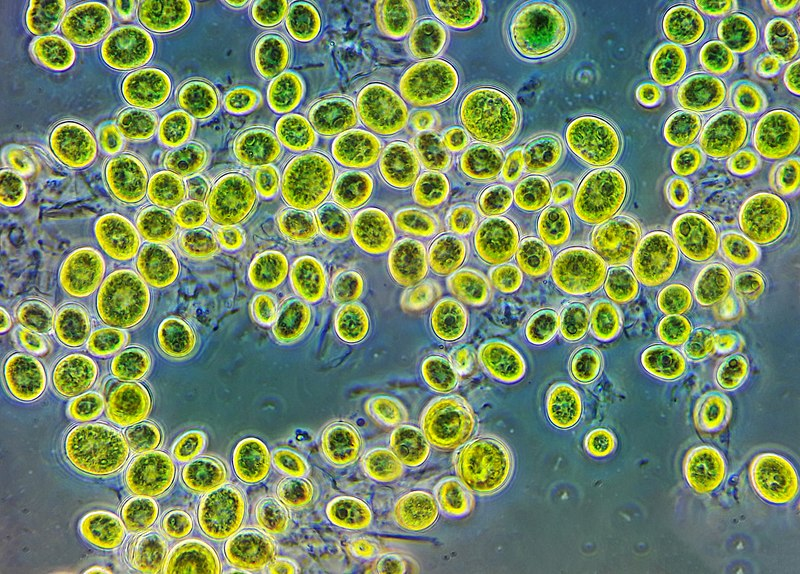

Хлорела
Хлорела (від грец. χλωρός, «зелений» і лат. ella — «маленький») — рід мікроскопічних одноклітинних зелених водоростей, має вигляд мікроскопічної нерухомої (без джгутиків) кульки від 2 до 10 мкм у діаметрі. Зовні клітини вкриті твердою двоконтурною оболонкою целюлозної природи. Оболонка багатьох видів містить шар спорополеніну, що надає їй хімічної стійкості та міцності. У цитоплазмі міститься один пристінний чашоподібний хлоропласт з одним піреноїдом у потовщеній його частині. Піреноїд зазвичай оточений крохмальною обгорткою. Ядро одне, однак у живій клітині без спеціальної обробки його не видно. Запасні речовини — крохмаль та безбарвна олія. Колоній та агрегатів не утворює. 
<Розмноження
Розмножується нестатевим шляхом, утворюючи автоспори. Статевий процес — автогамія. При цьому в материнській клітині 2-8 автоспор, які через розрив оболонки спорангію виходять у воду й набувають вигляду дорослої особини. Для деяких видів роду описані спочиваючі клітини — акінети.
Застосування людиною
Клітина хлорели — зручний об'єкт для різних досліджень. Хлорела — основний об'єкт масового культивування водоростей для практичного використання в різних напрямах, вона є першою водорістю, що започаткувала фікотехнологію. Значну роль у формуванні підвищеного інтересу до неї відіграв її хімічний склад. У перерахунку на суху речовину хлорела містить повноцінних білків 40% і більше, ліпідів — до 20%, вуглеводів — до 35%, зольних речовин — до 10%. Є вітаміни групи В, аскорбінова кислота (віт. С) і філохінони (віт. К). Знайдено речовину, яка має антибіотичну активність — «хлорелін». У деяких країнах хлорелу використовують у їжу після спеціальної обробки, що поліпшує її засвоєння. Для споживання використовують свіжу біомасу хлорели або спеціальну пасту з неї. Разом з легкістю культивування хлорела є не дуже вдалим об'єктом — біомасу спорополеніну технічно важко переробляти.
Саме хлорела була відправлена разом з іншими живими рослинами і тваринами в кабіні 2-го космічного корабля.
За вмістом білка урожай водорості хлорели з 1 га дорівнює врожаю пшениці з 25 га і врожаю картоплі з 10 га. Характерно й те, що урожай хлорели не дає відходів: немає коріння, соломи, листя, все тіло її — живильний продукт. Хлорела так швидко розмножується, що в одному літрі води виходить до 55 г продукції в сухому вигляді. Людині для харчування достатньо 500 г.
У Японії хлорелу розводять в басейнах на дахах будинків. У США, Франції та інших країнах організовані цілі заводи з отримання хлорели.
Суха хлорела в Японії йде в їжу людям і в корм птахам, худобі і рибам на розведенні. Але особливо цінно отримання з хлорели препарату, що містить вітамін В12, який допомагає при захворюванні на білокрів'я. Багато вчених планують не тільки міжпланетні кораблі з хлорели, але і вдома на планетах, де немає атмосфери. В 1972 році в Узбекистані отримали 17 тисяч тон суспенії водорості хлорела.
Хлорела цікавить вчених і як сировина для одержання нових продуктів харчування. В дельті річки Міссісіпі проєктується завод, на якому планують щоденно отримувати 30 т хлорели, що містить 50% білків, що дорівнює виробництву 35 000 т яловичини (така кількість може забезпечити білковим харчуванням близько 3 мільйонів осіб).
Більше того, для отримання рослинної продукції намічають використовувати моря і океани, які займають 2/3 поверхні нашої планети. Хлорелу розводять тепер і в стічних водах в басейнах біля заводів.
Найбільш придатними для промислового вирощування вважають 9 видів роду Хлорелла.
Засвоюваність білка хлорели доволі середня, через низьку перетравність. Визначена in vitro (з допомогою триптозана) перетравність хлорели склала 46,2%: для сухих клітин 62,5-65,5%, для клітин з розрушеними оболонками — 75,1%, екстрагованого протеїну — 85,6-87,4%. Було встановлено, що хлорелла погано перетравлюється тваринами з багатокамерними шлунками, недивлячись на високу перетравність чистого протеїну. Інертна і щільна оболонка хлорели перешкоджає практичному використанні їх в раціонах тварин з багатокамерними шлунками і харчуванні людини. Ведеться пошук способів з усунення цих недоліків. Дослідним шляхом (за забарвленням яєчного білка) встановлено, що β-каротин, який міститься в мембранах хлорелли, кури-несучки не засвоюють.
Біодизель із мікроводоростей
Вміст ліпідів у Scenedesmus dimorphus за різних умов може коливатися в межах 16-40%, а в Chlorella vulgaris — 14-22% від маси сухої речовини.
Залежно від кількості тих чи інших солей в середовищі змінюється склад хлорели. Вона накопичує від 8 до 88% білків, від 4 до 85% жирів і від 5 до 37% вуглеводів (крохмалю або цукру. Урожай хлорели — 70 г сухої речовини з 1 м² площі, або 700 кг з 1 га.